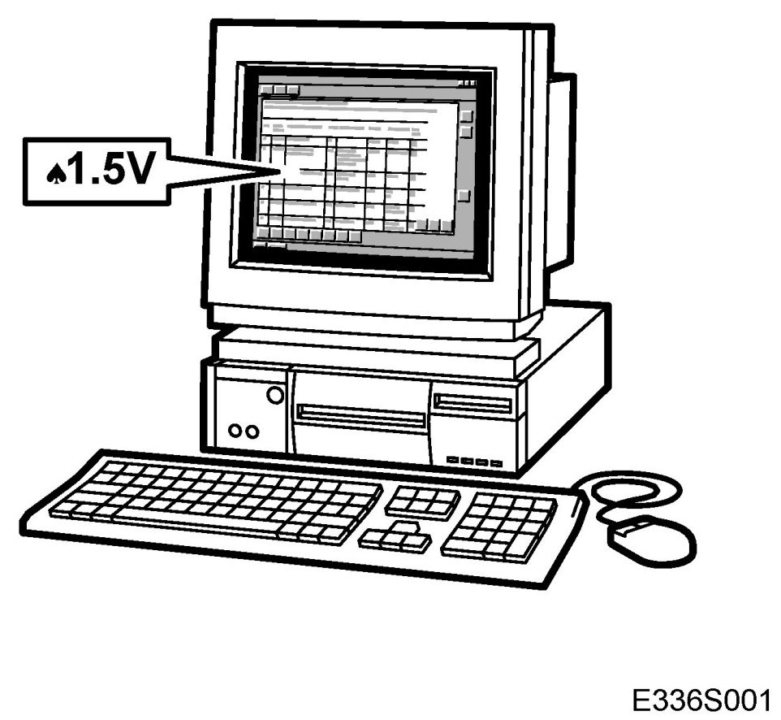
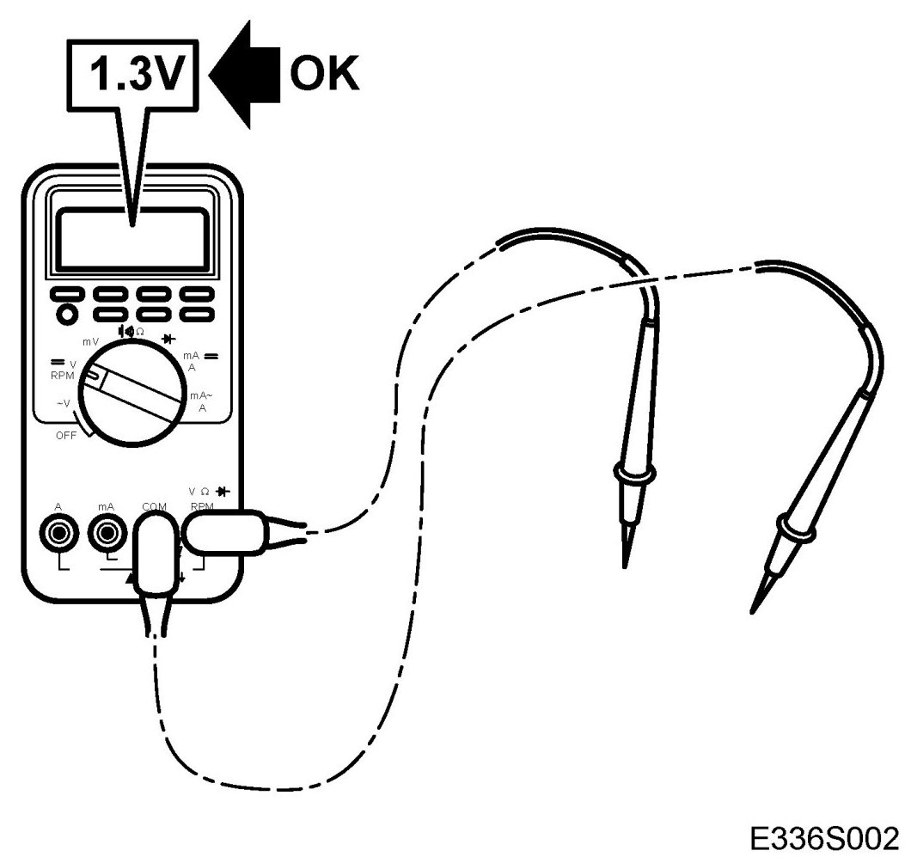
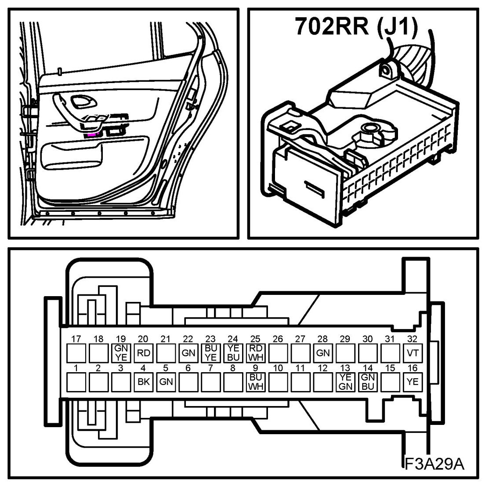
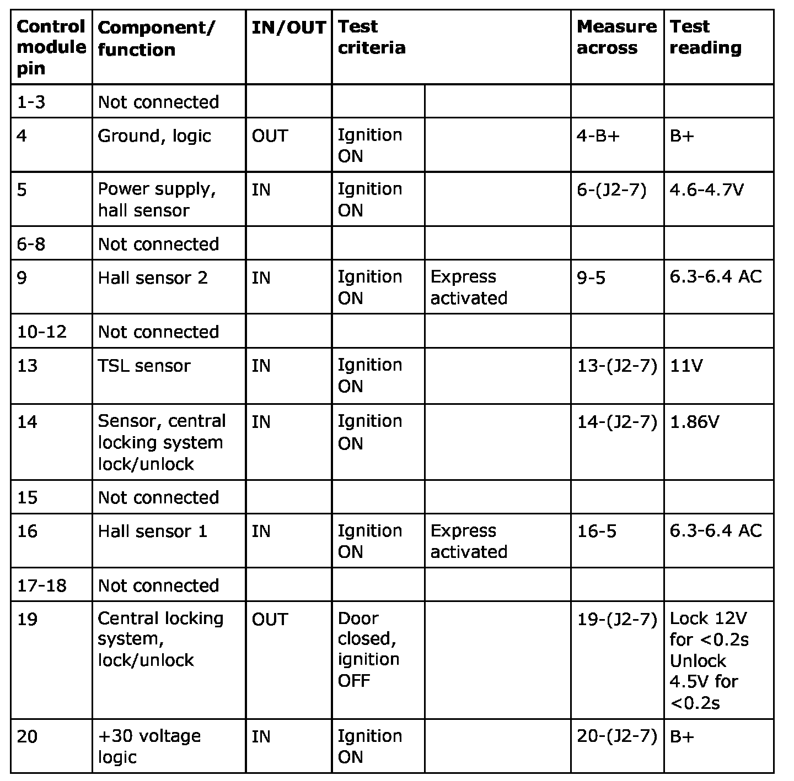
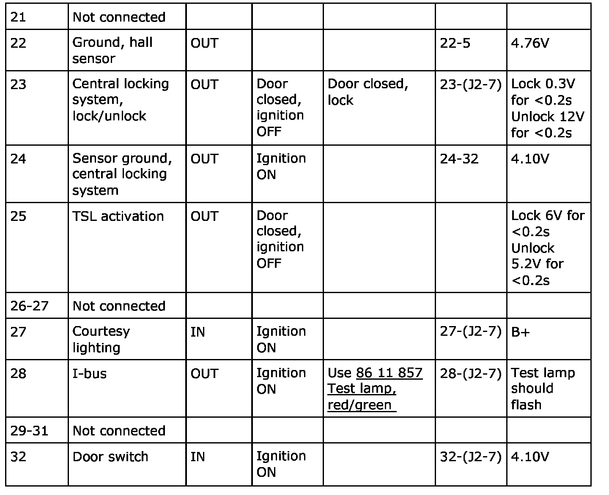
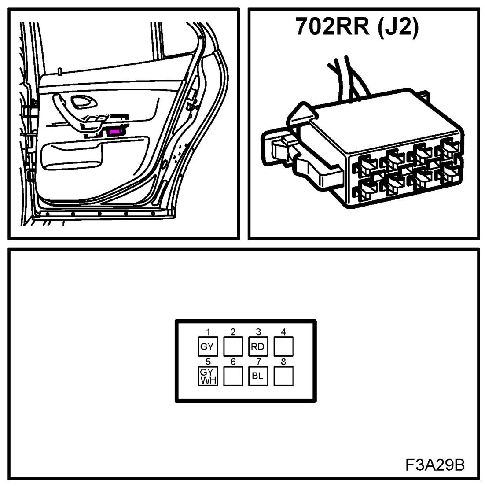
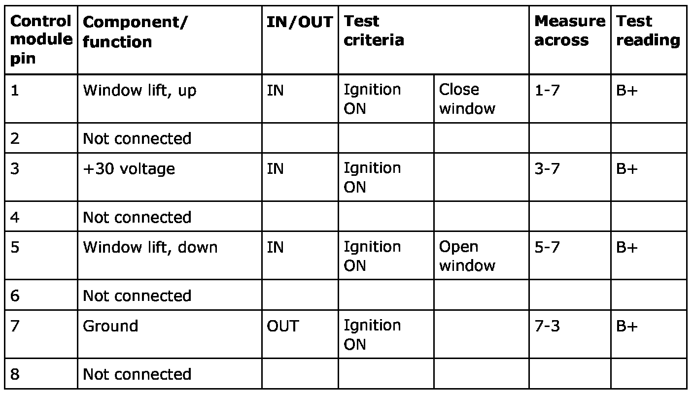

Test Readings, Rear Right Door Module, (702RR)
Test Readings, Rear Right Door Module, (702RR)
Scope


The following pages contain directions and readings for testing signals and levels of the control module.
Remember
- Observe the test criteria. Use common sense when assessing the test results.
- Check first that the control module is receiving power and is grounded.
- Then check all sensor inputs and signals from other systems.
- Finally, check the control module outputs. Remember that the test readings are not a confirmation of whether the actuator is in working order.
- If a test reading is incorrect, use the wiring diagram to locate the leads, connectors or components that need to be checked further.
- Specified readings are for a calibrated Fluke 88/97.
- Test readings % (+) and ms (+) indicate the signal pulse ratio and pulse width respectively. A scan tool with pulse ratio and pulse width measurement must be used. The sign indicates positive trigger pulse, TRIG+.
J1

NOTE: All units on the I and P-buses send signals.


J2
NOTE: All units on the I and P-buses send signals.

